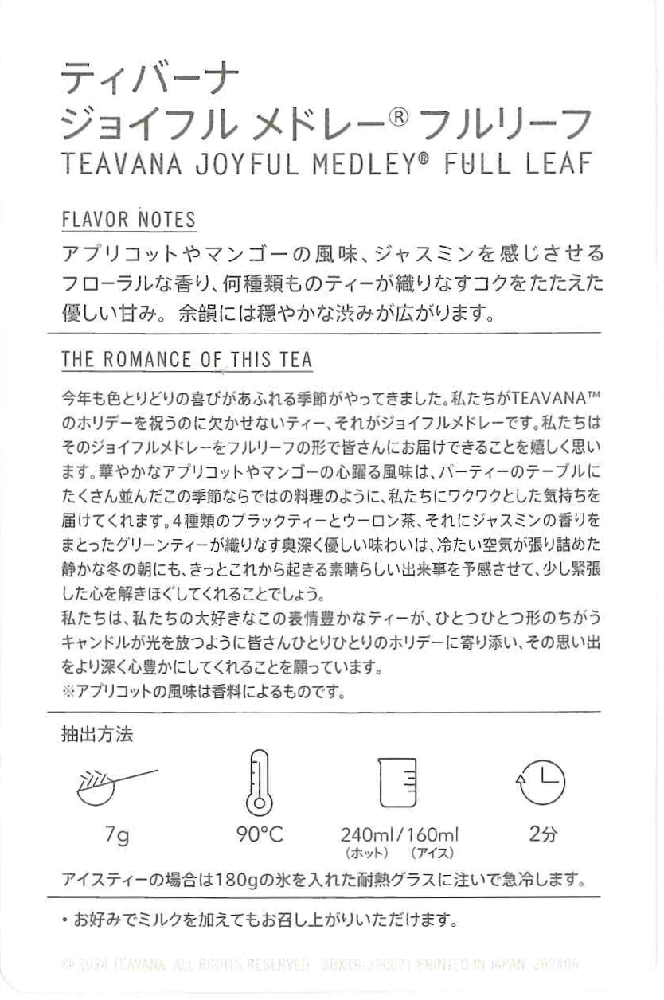

Card handed out with tea purchase from 2nd or 3rd floor
Back of card
Trinket Type: Card,Brochure
Location of collection: Approximately, 35°38'57.3"N 139°41'32.8"E
Year collected: 2024, December
Extra information: Free to enter, but not the cheapest, cafe experience. As of writing this is one of six Starbucks Reserves Roasteries in the world. It is a four storey Starbucks with extremely over the top decoration with giant machinery and tubes of beans running throughout. Personally, it’s worth seeing only for that fact and with how busy the location is, nobody would notice if you walked in did a tour and walked out. Brochure was free and the card came with my drink.


Free to take brochure from one of the food areas